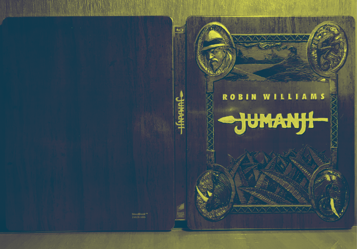
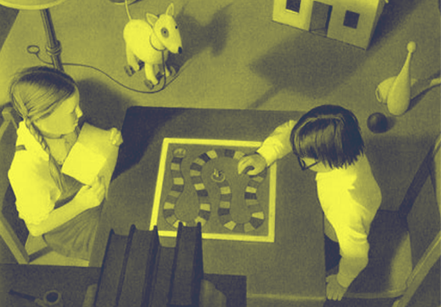

Plongez dans l'univers fascinant de Jumanji, un jeu où l'aventure prend vie et où chaque lancer de dés peut changer le cours de votre destin !
Le livre Jumanji, écrit par Chris Van Allsburg et publié en 1981, est un incontournable de la littérature jeunesse qui illustre à merveille le potentiel transformateur des jeux de société. À travers l'histoire de deux enfants, Judy et Peter, qui découvrent un jeu de société mystérieux, Van Allsburg crée une aventure où le jeu devient un portail vers un monde sauvage et imprévisible. Cette œuvre pose des questions essentielles sur l'interaction entre le monde réel et le monde du jeu, des thèmes qui résonnent particulièrement dans le cadre de l'évolution des jeux de société.
Une aventure immersive
Dans Jumanji, chaque coup de dés entraîne les personnages dans des situations de plus en plus folles et dangereuses, comme la rencontre avec des animaux sauvages ou des intempéries extrêmes. Ce concept de réalité augmentée préfigure les jeux modernes qui intègrent des éléments interactifs et immersifs. Aujourd'hui, avec les avancées technologiques, des jeux de société utilisent la réalité augmentée pour enrichir l'expérience de jeu, tout comme le jeu de Jumanji transformait la réalité des personnages.
Les leçons de Jumanji
L'histoire de Jumanji va au-delà du simple divertissement. Elle souligne l'importance de la coopération, de la stratégie et des conséquences des actions dans un cadre ludique. Les enfants doivent travailler ensemble pour surmonter les défis que le jeu leur impose, renforçant ainsi les liens sociaux. Cela fait écho aux tendances actuelles où les jeux de société modernes favorisent de plus en plus la collaboration plutôt que la compétition.
Un pont vers le futur
En réfléchissant à l'avenir des jeux de société, Jumanji offre une perspective fascinante. À l'ère du numérique, les jeux de société pourraient évoluer vers des expériences encore plus immersives, utilisant des plateformes de réalité virtuelle qui permettraient aux joueurs de vivre des aventures encore plus riches. De plus, l'interaction entre les joueurs et le jeu pourrait s'approfondir grâce à l'intégration d'intelligence artificielle, offrant une personnalisation unique à chaque expérience de jeu.
En somme, Jumanji est bien plus qu'un simple livre pour enfants. Il représente une réflexion profonde sur l'évolution des jeux de société, soulignant leur capacité à élever l'expérience humaine à travers des aventures partagées. Ce livre fait écho aux changements dans le paysage des jeux, reliant le passé, le présent et le futur de manière captivante. Ainsi, en explorant Jumanji, nous comprenons mieux l'importance et la place que les jeux de société occupent dans nos vies et comment ils continueront d'évoluer avec nous.
Cette histoire emblématique invite les lecteurs à envisager les possibilités infinies des jeux de société, rendant chaque partie non seulement un défi, mais aussi une véritable aventure.

Jumanji 1995 (Le film)
Revivez l'aventure magique du film Jumanji (1995), où deux enfants libèrent un homme piégé dans un jeu de société, les entraînant dans une course effrénée pour terminer le jeu et rétablir l'ordre dans leur monde.

Joe Johnston
Découvrez Joe Johnston, le réalisateur de Jumanji (1995), qui allie aventure et fantastique pour créer des films captivants et enrichir le cinéma moderne.

Poker Face - Lady gaga
Plongez dans l'univers de Poker Face, le hit emblématique de Lady Gaga, qui explore les thèmes de l'amour et du mystère à travers une mélodie entraînante et des paroles captivantes, transformant la scène pop des années 2000.